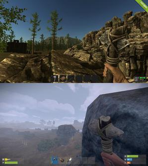

A Rust egy többjátékos túlélő videojáték, amelyet a Facepunch Studios fejlesztett ki.
A Rust először 2013 decemberében adott ki egy korai hozzáférésű verziót, majd 2018 februárjában kapott egy teljes verziót.
A Rust elérhető Microsoft Windows és macOS rendszeren.
A PlayStation 4 és Xbox One konzolos verziói, amelyeket a Double Elevennel együtt fejlesztettek ki, 2021 májusában jelennek meg.
A Rust eredetileg a DayZ klónjaként jött létre, amely egy népszerű mod az ARMA 2-hez, a Minecrafthoz hasonló alkotási elemekkel.
Rust célja a túlélés a vadonban az összegyűjtött vagy ellopott anyagok felhasználásával.
A játékosoknak sikeresen kell kezelniük éhségüket, szomjúságukat és egészségüket, vagy kockáztatniuk kell a halált.
Az ellenséges állatok, például a medvék és a farkasok jelenléte ellenére, mivel a játék teljes mértékben többszereplős, a fő veszélyt a többi játékos jelenti.
A harc fegyverekkel és különféle fegyverekkel, például íjakkal és nyilakkal zajlik.
Ezenkívül a nem játékos karakterek által irányított járművek alkalmanként bebarangolnak, és fegyveres játékosokat támadnak meg.
A Rust rendelkezik ravaszkodó képességekkel, bár kezdetben korlátozott, amíg bizonyos tárgyakat fel nem fedeznek a játék nyitott világában.
A védelem érdekében a játékosoknak bázist kell építeniük, vagy klánhoz kell csatlakozniuk, hogy javítsák túlélési esélyeiket.
A Raiding a Rust egyik fő szempontja.
A Rust támogatja az utólag beépített szervereket, amelyek extra tartalmat adhatnak hozzá.
A Rust fejlesztése a DayZ klónjaként kezdődött, egy népszerű túlélő mod az ARMA 2 számára, amely a Minecraftból származó elemeket tartalmaz.Garry Newman, a Facepunch Studios vezérigazgatója szerint "A Rust a DayZ klónjaként indult." A Rust egy DayZ klónként indult. De aztán úgy döntöttünk, hogy elegünk van a zombikkal való harcból. És nem tudunk versenyezni az Arma-szigettel a nevezetességek és városok tekintetében." A ConseRust fejlesztése a DayZ klónjaként kezdődött,[30] egy népszerű túlélőmod az ARMA 2 számára, amely a Minecraftból származó elemeket tartalmaz. Garry Newman, a Facepunch Studios vezérigazgatója azt mondta: "A Rust DayZ-klónként indult. De aztán úgy döntöttünk, hogy elegünk van a zombikkal való harcból. És nem tudunk versenyezni az Arma-szigettel a nevezetességek és városok tekintetében." Következésképpen Newman úgy jellemezte a játékot, hogy az inkább a S.T.A.L.K.E.R sorozat bejegyzéseihez hasonlít. 2013. december 11-én a Facepunch kiadta a játékot a Steam Early Access programjában. 2013. december 11-én Az alfa indulását követően a Facepunch aktívan kiadta a Rust frissítéseit, amelyek olyan mechanikákat adtak hozzá, mint az állatok, vadászat, páncélzat és fegyverek. 2014 februárjában a fejlesztők eltávolították a zombikat, az ideiglenes ellenséget a Rustból, és vörös mutáns medvékkel és farkasokkal helyettesítették őket. 2014 A fejlesztők már korán meghozták azt a döntést, hogy nem próbálják benépesíteni a világot érdekes, felfedezésre váró helyszínekkel, hanem inkább lehetőséget biztosítanak azok létrehozására. Newman ezt úgy jellemezte, hogy "mi megadjuk nekik az eszközöket, ők pedig megalkotják a világot." A fejlesztők egyik célja az volt, hogy olyan világot hozzanak létre, amely nem ösztönzi a játékosok bizonyos fajta viselkedését. Fontolóra vették egy olyan rendszer bevezetését, mint a DayZ-ben, ahol azok, akik más játékosokat ölnek meg, egyedi ruhákat kapnak, amelyek "banditaként" azonosítják őket, vagy esetleg egy minősítési vagy színkódolt rendszert. A fejlesztők azonban végül elvetették ezeket az ötleteket, mivel úgy vélték, hogy ezek a játékosok szabadságát csökkentenék. Ehelyett meglepetésükre azt tapasztalták, hogy a hangos csevegés bevezetése észrevehető hatással volt a játékosok viselkedésére. A kommunikáció lehetőségével sok játékos már nem ölte meg egymást látásból, félelemből. 2014 végén a fejlesztők kiadták a Rust kísérleti módját, és átportálták azt egy akkor még meg nem jelent játékmotorra, a Unity 5-re, továbbfejlesztve a grafikát, és ezzel javítva a shader mechanikát és a textúra realizmusát, valamint nagyobb procedurálisan generált világokat tett lehetővé. 2014 októberében a kísérleti mód egy új, CheatPunch nevű csalás elleni rendszert tartalmazott, amely néhány nap alatt több ezer játékost tiltott le. 2014 októberében a kísérleti mód lett az alapértelmezett indítási lehetőség. A kísérleti mód 2014-ben vált alapértelmezett indítási lehetőséggé. Nem sokkal később, decemberben az EasyAntiCheat, egy harmadik féltől származó anti-cheat rendszer váltotta fel a CheatPunch-ot. 2015 elején a Rust hozzáadott egy olyan funkciót, amely minden játékos bőrszínét a Steam ID-jukhoz kötve döntötte el. 2015-ben Newman úgy jellemezte a játékot, hogy inkább a bejegyzésekhez hasonlóan az S. T.A.L.L.K.E.R. sorozathoz. 2013. december 11-én a Facepunch megjelentette a játékot a Steam Early Access programban. 2013. december 11-én a Facepunch az alfa indulását követően aktívan kiadta a Rust frissítéseit, amelyek olyan mechanikákat adtak hozzá, mint az állatok, a vadászat, a páncélzat és a fegyverek. 2014 februárjában a fejlesztők eltávolították a zombikat, az ideiglenes ellenséget a Rustból, és vörös mutáns medvékkel és farkasokkal helyettesítették őket. 2014 A fejlesztők már korán meghozták azt a döntést, hogy nem próbálják benépesíteni a világot érdekes, felfedezésre váró helyszínekkel, hanem inkább lehetőséget biztosítanak azok létrehozására. Newman ezt úgy jellemezte, hogy "mi megadjuk nekik az eszközöket, ők pedig megalkotják a világot." A fejlesztők egyik célja az volt, hogy olyan világot hozzanak létre, amely nem ösztönzi a játékosok bizonyos fajta viselkedését. Fontolóra vették egy olyan rendszer bevezetését, mint a DayZ-ben, ahol azok, akik más játékosokat ölnek meg, egyedi ruhákat kapnak, amelyek "banditaként" azonosítják őket, vagy esetleg egy minősítési vagy színkódolt rendszert. A fejlesztők azonban végül elvetették ezeket az ötleteket, mivel úgy vélték, hogy ezek a játékosok szabadságát csökkentenék. Ehelyett meglepetésükre azt tapasztalták, hogy a hangos csevegés bevezetése észrevehető hatással volt a játékosok viselkedésére. A kommunikáció lehetőségével sok játékos már nem ölte meg egymást látásból, félelemből. 2014 végén a fejlesztők kiadták a Rust kísérleti módját, és átportálták azt egy akkor még nem kiadott játékmotorra, a Unity 5-re, ami javította a grafikát, és ezzel együtt a shader mechanikát és a textúra realizmusát,valamint nagyobb procedurálisan generált világokat tett lehetővé. 2014-ben a kísérleti mód egy új, CheatPunch nevű csalás elleni rendszert tartalmazott, ami néhány nap alatt több ezer játékost tiltott ki. 2014 októberében a kísérleti mód lett az alapértelmezett indítási lehetőség.[36] Nem sokkal később, decemberben az EasyAntiCheat, egy harmadik féltől származó anti-cheat rendszer váltotta fel a CheatPunch-ot. 2015 elején a Rust hozzáadott egy olyan funkciót, amely minden játékos bőrszínét a Steam ID-jéhez kötötten határozta meg. 2015-ben a Rust egy olyan funkcióval bővült, amely minden játékos bőrszínét a Steam ID-jéhez kötötte.
Források:
https://rust.fandom.com/hu/wiki/RUST-wiki#J.C3.A1t.C3.A9k_ismertet.C5.91
https://en.wikipedia.org/wiki/Rust_(video_game)